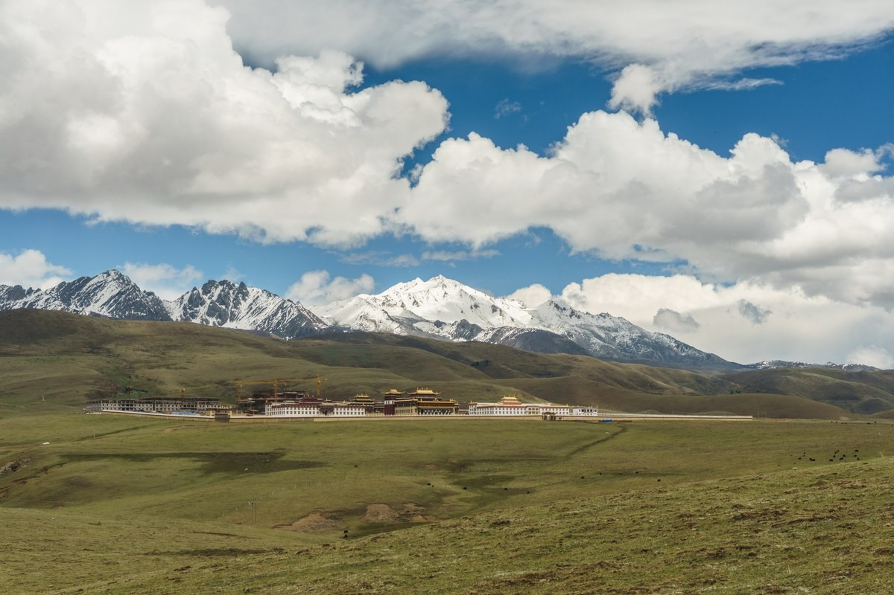
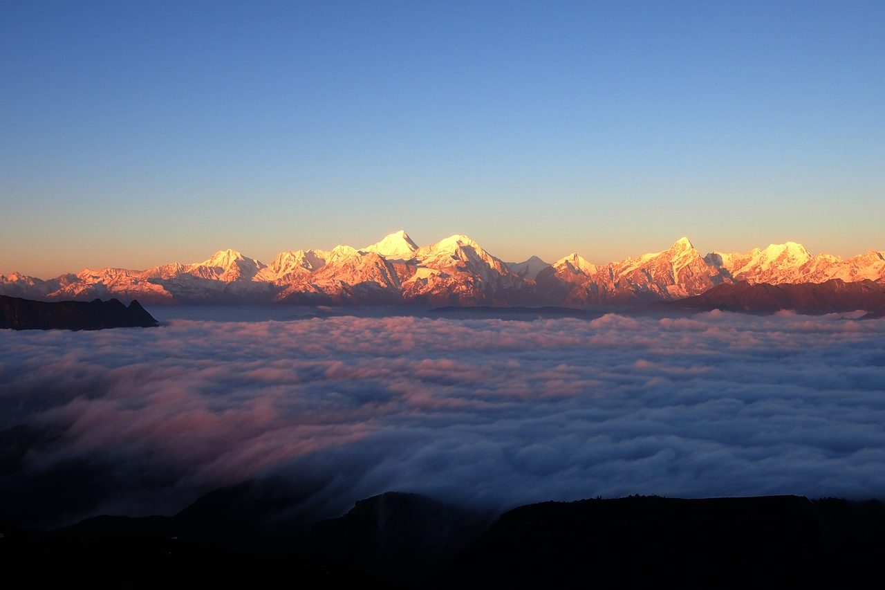

WINDOW 01奖励窗口
贡嘎雪山群
红海子 / 机场路正规停车区
只在能见度好、路面干燥时停车；浓雾、结冰或临时管制时直接通过。
S434 路段 · 不等待
9.30 晚出发：天府机场取车，10.7 从天府机场返程，共 7 晚。
A 线传统逆时针：成都 → 巴朗山 → 四姑娘山（猫鼻梁日落 · 长坪沟 · 双桥沟）→ 丹巴甲居 → 墨石 → 塔公 → 红海子 → 新都桥 · 鱼子西 → 折多山 → 康定 → 雅安 → 成都。住宿已全部订好。
ROUTE / 01
主线走国省道，鱼子西是唯一上山支线（10.5 日落）；冷噶措、八郎生都等非铺装支线不安排。雪山机位只使用景区、国道观景区和正规停车点。
位置为路线理解示意，不按精确比例。编号表示行驶顺序；实际道路以高德导航、交警通告和当天管制为准。
SPOT ATLAS / 01A
先看路线，再筛停靠点。“顺路”不等于“必须去”；景点卡会告诉你时间、费用、海拔和触发条件。
PLAN OPTIONS / 01B
点击路线后，下方每日路书、道路表和住宿清单会一起切换。每条路线下方也整理了小红书路线分享，先看真实行程节奏，再回到本站的停车、天气和安全规则做取舍。
ITINERARY / 02
点击日期切换详细路书。驾驶时间已按普通日导航结果加了休息余量，但国庆当天仍可能额外增加 2–4 小时。
WEATHER / 02
天气图按每天白天主要去处画出气温和降水；下方卡片补充当晚住处。垭口、观景台（巴朗山、红海子、鱼子西、折多山）比表中再冷 5–8°C，早晚可能到 0°C 以下。
每天两地明细
正在获取天气预报…
SNOW WINDOWS / 02A
10 月初参考日出约 07:10、日落约 19:00，实际以出发前一周的当地天气应用为准。日照金山只在晴朗且西侧低云较少时出现。
只在能见度好、路面干燥时停车；浓雾、结冰或临时管制时直接通过。
三个位置按所选路线和停车条件择一，不需要为了同一座山重复进入多个收费点。
前一晚确认可见方向。清晨 07:10 到点，若云层厚且没有变化，等待 20–30 分钟后离开。
顺路且停车稳定时短停，下午顺光最好；停车已满或山体被云遮时直接回酒店。
乘观光车到 3840m 高处后逐站向下，一天内完成近距离雪峰、公路和倒影三类画面。
天气预报只决定是否等待，不决定是否冒险上支线。
不为了“再等十分钟”破坏后面的白天车程。
墨石公园阴天也能看，晴天时间必须先留给山。
ROAD DETAILS / 02B
距离为路线规划参考，国庆不以导航显示的到达时间为承诺。厕所、充电和司机轮换尽量放在县城、服务区、换电站及正规停车区。
| 日期 / 路段 | 参考距离 | 道路与海拔 | 建议停靠 | 主要风险 | 处置规则 |
|---|
STAY GUIDE / 02C
五人默认订 2 间房：一间双床、一间家庭房或三人间。订不到合适三人间时改成 3 间房，并在预算器中增加约 ¥4,000–7,000。
每个落脚点按首选、备选和预算选整理；携程已显示的信息与仍需电话确认的项目分开标注，不代表已预订或国庆仍有房。图片是住宿环境参考，不代表具体房型。酒店价格与小红书实测笔记均按 2026-08-19 查询结果整理。
SCENERY / 03
按行程顺序：冰川雪峰、嘉绒藏寨、草原神山、高山日落，一路不重样。

10.4—10.5 · 海拔 3,700m
10.5—10.6 · 贡嘎 7,556mBUDGET / 04
滑动修改机票、住宿和餐饮标准。租车按乐道 L90 实付 ¥4,271.11；电费按约 1,300km、山路 20–25 度/百公里估算；其余为估算，不是实时报价。
ESTIMATED TOTAL
约 ¥0 / 人
建议再留 ¥3,000–5,000 团队机动金，不计入上方总额。酒店尽量订可取消，景区房价在国庆会明显浮动。
CAR / 05
已租 · ¥4,271.11
85kWh 电池，CLTC 续航 570–605km，可充可换。川西满载 5 人、连续爬坡、早晚低温，实际按 330–400km 算；上坡电耗可到 20–25 度/百公里，下坡靠能量回收能补回一部分。原则：电量不低于 30%，每晚能充就充。
CHARGING PLAN · A 线每日补能
换电站：都江堰、康定、丹巴甲居（G248）、天全、雅安均属蔚来川西环线；四姑娘山、塔公、新都桥以充电桩为主，出发当天在 App 里再确认。国庆换电站可能排队，优先在住处或景点停车时慢充 / 快充。
确认换电权限和还车电量要求；电量不到 90% 就在机场附近充满。
07:30 都江堰换电 / 快充补到 90%+ 再进山；中午到镇上约剩 35–50%，午饭后在长坪村国网充电站充到 90%+。
电量不到 80% 晚上去长坪村国网充电站补一次，离民宿很近。
只耗约 15–20%，小金不用专门充；到甲居后去 G248 蔚来换电站换满。
从甲居满电出发，到塔公约剩 55–65%；晚上在雅拉雪山游客中心特来电或民宿充电。
出发 ≥85%；红海子回来约剩 50%，新都桥午饭时快充到 80%+，再上鱼子西。
康定蔚来换电站换满，到雅安电量充足；按还车要求在雅安补电。
雅安满电出发，还车前按合同电量在机场附近补齐。
PRE-DEPARTURE / 06
以下按 2026-09-28 查到的官方通报整理，针对 A 线传统逆时针。路况每天会变，10.1 凌晨出发前再看一次阿坝州路况和 12122。
两个景区都已实名买好，当天带身份证入园即可。剩下的只有鱼子西：10.4 晚上在小程序约；墨石、塔公寺等现场买。
当面确认能否用蔚来 / 乐道换电站及怎么授权和结算；拍下取车电量；问清还车电量要求、是否另收进甘孜 / 阿坝的费用。没有换电权限就改为每晚充电，10.1 在都江堰快充补满再进山。
8 月 18 日关门沟、观音庙泥石流断道，现已抢通；阿坝州 9.18 通报映秀至小金交界“道路畅通”。山体仍松动，白天通过、灾害点不停车；遇临时管制原地等放行。
15:00 出园，小金只停 15 分钟，约 18:15 到丹巴县城吃晚饭，再去 G248 蔚来换电站换满。G350 丹巴半扇门镇阿娘寨段 9.9—11.30 半幅施工、单边放行。饭后最后约 8km 甲居村道用民宿定位，提前告诉老板约 20:00 到。
巴朗山隧道口约 3,900m、S434 最高约 4,200m，清晨可能雨夹雪或暗冰。取车时当面确认防滑链规格和安装方法，羽绒服放在随手可拿的位置。
7 座及以下小客车 10.1 0:00—10.7 24:00 高速免费。10.1 早上 6 点出发；10.7 雅安 11:00 出发，15:30 前还车，16:00 进航站楼。
高德下载四川离线包；把酒店、景区、充换电站和备用医院收藏到同一清单，截图保存门票和酒店订单二维码。
TEAM OPS / 06B
出发前分工，避免司机一边开车一边找酒店、看路况、接电话。角色可以兼任，但每项必须有明确负责人。
负责复杂山路与清晨路段；前一晚不饮酒，连续驾驶不超过 2 小时。
接管高速和平缓时段；同样登记租车驾驶人，不能临时换未登记司机。
只负责导航、路况、停车区和充换电站，不让驾驶员在行车时操作手机。
管理团队公款、电费、停车票和押金，隔天在群内公布一次清晰账目。
每天早晚询问头痛、恶心、睡眠和血氧趋势，必要时果断提出停止上升。
FALLBACK MATRIX / 06C
临场最危险的不是坏天气，而是所有人都舍不得删景点。以下规则出发前先达成一致，触发后直接执行。
| 触发情况 | 立即动作 | 删减内容 | 新的住宿 / 路线 | 恢复条件 |
|---|---|---|---|---|
| A 线 10.1 G350 卧龙段管制落石 / 泥石流，放行时间不明 | 原地等官方放行，不抄村道 | 猫鼻梁日落改到 10.3 路过时 | 预计超过 3 小时：改雅安—天全—G351 夹金山—小金，或当晚住都江堰、次日 04:30 进山 | 官方恢复通行，且能在天黑前抵达 |
| A 线 10.3 夜路状况不好司机疲劳、大雾、落石或施工长时间不放行 | 在小金或丹巴县城停下 | 放弃当晚进甲居 | 就近住县城，电话告知甲居民宿；10.4 早上进寨看一眼再出发 | 天亮、司机睡够 |
| B 线 10.1 雅康严重拥堵预计 20:00 后才能到康定 | 16:00 前重新评估 | 取消康定散步和次日红海子首停 | 能到泸定则住泸定；不要夜翻山 | 次日路况正常后再进康定 |
| 多人出现明显高反头痛、恶心或失眠持续加重 | 停止继续上升 | 取消新都桥、墨石和高海拔观景点 | 下撤康定或丹巴，必要时就医 | 症状充分缓解且专业意见允许 |
| S434 雨雪 / 结冰 / 浓雾交警分流或能见度明显下降 | 服从管制，切换主路 | 取消红海子、机场路所有停车 | 按导航走 G318 或留宿康定 | 官方解除管制且白天能见度良好 |
| B 线 10.3 比计划晚 2 小时14:00 仍未离开八美 | 直接前往丹巴 | 取消墨石公园或塔公重复停留 | 保持丹巴县城住宿不变 | 不恢复，当天留出天黑前余量 |
| 传统逆时针首日多人高反到卧龙后症状持续加重 | 停止继续升高 | 取消当晚四姑娘山住宿 | 留宿卧龙，次日重新评估 | 症状充分缓解且道路正常 |
| 传统线 10.6 进度落后16:00 仍未离开康定 | 取消泸定桥和雅安目标 | 不再增加任何景点 | 当晚住泸定，10.7 更早出发 | 不恢复，当天避免夜间疲劳驾驶 |
| 雪山加量版道路转差降雪、管制或次日预计到天府超过 8 小时 | 10.6 取消长坪沟并下撤 | 取消四姑娘山第 3 晚 | 当晚住都江堰，次日直达天府机场 | 不恢复，航班安全优先 |
SAFETY / 07
这不是医疗建议。任何明显或持续加重的不适，都以停止上升、尽快下撤和寻求专业帮助为优先。
首两天慢走、少说话、不饮酒。头痛、恶心、失眠持续加重时停止行程；呼吸困难、意识异常、步态不稳时立即下撤并拨打 120。
不要用吸氧掩盖严重症状继续上山国庆高海拔清晨可能低于 0°C。车辆准备合规防滑链，驾驶员提前学会安装；遇降雪、浓雾或暗冰，取消 S434 沿途停靠。
保暖层 + 防水层 + 帽子手套每天 06:00 前后出发，电量低于 30% 就补电。山区不要因堵车抄村道；官方分流、交警指挥优先于任何攻略和旧导航。
路线切换不能替代当天路况判断双桥沟乘车到最高点后自上而下游览，减少无效爬升。出现不适可跳过站点，直接乘观光车回入口。
景色不会因为少走一站而消失ALTITUDE RESPONSE / FIELD CARD
这是一张旅行现场提示卡，不替代医生诊断或急救培训。症状持续、加重或无法判断时，按更严重一级处理。
常见表现轻微头痛、头晕、乏力、心跳加快、食欲下降。
处理
常见表现明显或持续加重的头痛、反复恶心呕吐、明显乏力、无法正常行走，休息后仍未缓解。
处理
红旗表现意识模糊、反应异常、步态不稳像醉酒、静息呼吸困难、嘴唇或指甲发紫、粉红或血性泡沫痰、抽搐或无法正常交流。
处理
SAFETY PLAYBOOK / BEFORE & DURING
把下面的角色和触发规则发到群里。任何一人可以提出暂停，健康和道路安全优先于拍照、日落和打卡。
CHECKLIST / 08
按“出发前核对 → 车上可取 → 途中不冒险”整理。公共物资只带一份；个人处方药、过敏史和保暖衣物由本人负责。
SOURCES / 09
每个景点卡片都提供小红书精确检索入口，关键词已细化到停车、机位、排队或徒步。小红书 Web 登录态可能失效，因此页面不伪造具体作者和笔记标题；游客经验只用于判断拥堵、机位和取舍，不作为票价、管制或开放状态依据。
资料核验时间：酒店价格 2026-08-19；路况、施工管制、景区入园与天气 2026-09-28。四姑娘山 2026 国庆专项通告以景区公告页为准。
24 个景点均配有本地图片。照片来自 Wikimedia Commons，作者与具体许可可从每张卡片的“图片来源”打开；缺少开放许可原位照片的冷门点已明确标为“区域实景参考”，不冒充原位照片。
四姑娘山实拍 塔公草原实拍 丹巴实拍 幺妹峰 · George N / CC BY 2.0 塔公寺 · Marym1718 / CC BY 4.0 长坪沟枯树滩 · George N / CC BY 2.0 贡嘎日照金山 · rheins / CC BY 3.0